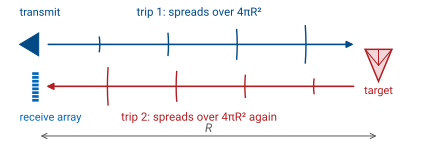
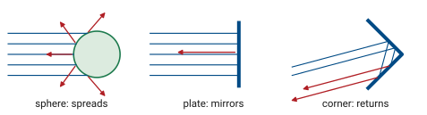
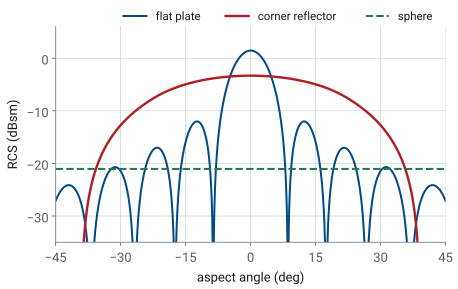

L25 - The Radar Equation, Path Loss, and RCS#
The Radar Equation, Path Loss, and RCS
A 10 cm corner reflector 3 m from the PHASER returns an echo 31 dB above the noise.
Lesson 25 · Antennas, Phased Arrays, and Radar Systems · Dr. Neil Rogers
Printing
To print the slides, switch to present mode and print: one slide a sheet, with room for notes. Print from read mode for the whole lesson.
Learning Objectives
- I can apply the radar equation to calculate received power for a given geometry, and account for path loss and radar cross section (RCS).
Module 3 pointed the PHASER’s beam at a source that transmitted on its own, the HB100. From here on the PHASER supplies its own signal: a separate transmit antenna illuminates the scene, and the eight-element array listens for what comes back. Before we can process an echo for range (Lesson 26) or decide whether it is there at all (Lesson 27), we need to know how strong it is. That is the job of the radar equation, and it is the Friis equation of Lesson 2 applied twice.
Friis, One Way
Received power falls as \(1/R^2\) on a one-way link.
At 10 GHz and 3 m, the free-space path loss is 62.0 dB.
Lesson 2 built the one-way link from two pieces. The transmitter’s power spreads over a sphere, so at range \(R\) the power density in the direction of the main beam is \(P_tG_t/4\pi R^2\). The receive antenna collects that density over its effective aperture \(A_e = G_r\lambda^2/4\pi\). The product is the Friis transmission equation,
and the factor \((4\pi R/\lambda)^2\) is the free-space path loss. It is not a loss in the sense of power turned to heat. It measures how thinly the transmitted power has spread by the time it reaches an aperture of size \(\lambda^2/4\pi\). The course runs the radar at a 10 GHz carrier, the value in ADI’s radar scripts, so \(\lambda = 3.0\ \text{cm}\) and at \(R = 3\ \text{m}\)
The power falls as \(1/R^2\): double the distance and the received power drops 6 dB.
Two Trips

The target intercepts power from the first trip and re-radiates it.
The echo spreads over a second sphere on the way back.
A radar runs the link twice. On the first trip the transmitter illuminates the target, and the target intercepts some of the incident power. The target then acts as a transmitter of its own and re-radiates that power, and on the second trip the echo spreads over a sphere centered on the target before the receive array collects a small piece of it. Each trip carries its own \(1/R^2\) spreading, which is where the radar equation’s \(1/R^4\) comes from.
The PHASER uses a separate transmit antenna placed beside the receive array, at the same height, as the ADI radar setup page describes. A continuous-wave radar transmits and receives at the same time, so it needs two antennas. They sit centimeters apart and the target sits meters away, so both trips cover the same range \(R\) and the geometry is monostatic for the purpose of the radar equation. A radar whose transmitter and receiver are far apart is bistatic, and its two trips have different ranges \(R_t\) and \(R_r\).
The Radar Equation
Doubling the range lowers the echo by 12 dB.
Follow the power through the two trips. The density at the target is \(P_tG_t/4\pi R^2\), the same as in Friis. The target intercepts that density and re-radiates it as if it were an isotropic source of power \(\sigma P_tG_t/4\pi R^2\), where \(\sigma\), in square meters, is the target’s radar cross section. That re-radiated power spreads over a second sphere of area \(4\pi R^2\) on its way back, and the receive array collects it over \(A_e = G_r\lambda^2/4\pi\):
This is the radar equation. Every factor except \(\sigma\) and \(R^4\) is already familiar from Friis. The fourth power of range is what makes radar hard: doubling the range lowers the echo by a factor of 16, or 12 dB, where a one-way link loses only 6 dB. A fielded radar also multiplies the right side by \(1/L_s\), a system loss that collects cable, radome, and processing losses. We leave it at 0 dB for the PHASER on a bench, and at a few meters the atmosphere adds nothing measurable at X-band.
Two-Way Path Loss in Decibels
The echo falls 40 dB per decade of range.
A one-way link falls 20 dB per decade.
Link budgets run in decibels, because the products become sums and each term can be read on its own. Take \(10\log_{10}\) of every factor. Power is in dBm, gains in dBi, \(\lambda\) in meters, \(R\) in meters, and the radar cross section in dBsm, decibels relative to one square meter. The constant is \(10\log_{10}(4\pi)^3 = 33.0\) dB. The range term, \(40\log_{10} R\), is the two-way path loss that sets the slope: every factor of 10 in range takes 40 dB off the echo.
Radar Cross Section
\(\sigma\) is the area of an isotropic scatterer that would return the same echo.
Size, shape, and the viewing angle set it.
We quote it in dBsm, relative to 1 m².
The radar equation treats the target as a fictitious area: it intercepts the incident power density over \(\sigma\) square meters and re-radiates all of it equally in every direction. A real target does neither. It intercepts power over its physical shadow and re-radiates it in a pattern of its own, often concentrated in a few directions. The radar cross section folds both effects into one number, defined by what the radar measures: the ratio of the scattered field \(E_s\) at the radar to the incident field \(E_i\) at the target, scaled to the sphere of radius \(R\) that the echo spreads over. The limit removes the dependence on range, so \(\sigma\) belongs to the target and the viewing direction, not to the geometry of the measurement.
Because \(\sigma\) includes the target’s own re-radiation pattern, it can be much larger or much smaller than the target’s physical cross section. A target that sends its echo straight back toward the radar has a large \(\sigma\); one that sends it elsewhere has a small one, which is the whole principle of stealth shaping.
Sphere, Plate, and Corner

Shape, 10 cm |
Peak \(\sigma\) |
dBsm |
|---|---|---|
sphere |
\(\pi a^2\) |
−21.0 |
flat plate |
\(4\pi A^2/\lambda^2\) |
+1.4 |
corner |
\(4\pi a^4/3\lambda^2\) |
−3.3 |
Three simple shapes show the range of behavior, all at 10 GHz and all 10 cm across: a sphere 10 cm in diameter, a square plate 10 cm on a side, and a triangular trihedral corner reflector with 10 cm edges. The sphere spreads its echo in every direction, the plate returns a narrow beam only when it faces the radar, and the corner returns its echo toward the radar over a wide range of angles. The next three frames take each in turn.
The Sphere
A large sphere returns its own shadow area, from any direction.
10 cm across: \(\sigma = 0.0079\) m², or −21.0 dBsm.
A sphere much larger than a wavelength scatters the power it intercepts nearly equally in every direction, so it is the one shape whose radar cross section equals its physical shadow, \(\pi a^2\). It is also the only shape whose \(\sigma\) does not depend on the viewing angle, which is why calibration spheres hang from balloons over radar test ranges. For the 10 cm sphere, \(a = 0.05\ \text{m}\) and the circumference is \(10.5\lambda\), just inside this optical region:
A sphere much smaller than a wavelength is in the Rayleigh region, where \(\sigma\) grows as \(a^6/\lambda^4\). That steep dependence on frequency is why a weather radar sees raindrops at X-band and not at L-band. Between the two regions, near \(2\pi a \approx \lambda\), the resonance region oscillates as surface waves around the sphere add and cancel.
The Flat Plate
The plate intercepts power over \(A\) and re-radiates it as a uniform aperture.
Its echo is 22.5 dB above the sphere’s, but only within ±3.8°.
A flat plate facing the radar intercepts the incident density over its area \(A\), and the induced currents on its surface are uniform in amplitude and phase. That is the uniform aperture of Lesson 15, and it re-radiates with that aperture’s gain, \(4\pi A/\lambda^2\), aimed straight back at the radar. The radar cross section is the product of the area that collects and the gain that returns:
That is 22.5 dB above the sphere of the same size, because the plate concentrates its echo into one narrow beam where the sphere spreads it over all directions. The gain that makes the plate bright also makes it narrow, and the next frame shows how narrow.
RCS Versus Aspect

The plate falls 3 dB by ±3.8°.
The corner holds within 3 dB out to ±19°.
Turn the plate away from the radar by an angle \(\theta\) and its re-radiated beam turns by \(2\theta\), because a mirror reflects at the angle of incidence. The echo falls off along the plate’s own aperture pattern, a \(\text{sinc}^2\) with sidelobes, and the first null arrives at \(\sin\theta = \lambda/2a\), or 8.6° for the 10 cm plate. The argument carries a factor of two over the one-way pattern of Lesson 15 because the wave crosses the path difference across the plate twice. A plate is a strong target only when we know exactly where it faces.
The corner reflector trades 4.8 dB of peak RCS for a wide angular response: it stays within 3 dB of its peak out to ±19°, and within 6 dB out to ±26°. The sphere is flat at every angle. The plate curve is the physical-optics result, and the corner curve is a geometric-optics estimate computed from the area that returns a triple bounce, which is why it drops abruptly near ±38° where a real corner rolls off more gradually.
The Corner Reflector
Three perpendicular faces send every ray back the way it came.
With 10 cm edges: 0.47 m², or −3.3 dBsm.
A trihedral corner reflector is three flat plates joined at right angles, like the inside corner of a box. Each bounce off one face reverses one component of the ray’s direction, so a ray that strikes all three faces leaves with all three components reversed and travels back exactly antiparallel to the way it came. That holds for any arrival direction inside the corner’s opening, which is why the corner reflector is the standard radar target, the lab target here, and the reason bicycle reflectors work.
The corner behaves like a flat plate that always faces the radar. The plate’s area is the part of the opening that returns a triple bounce. Looking straight down the symmetry axis, that region is a hexagon of area \(a^2/\sqrt{3}\), and the plate formula gives
Off the axis the hexagon shrinks, and that shrinking produced the corner curve on the previous frame. The \(a^4\) dependence is steep: a corner with 20 cm edges is 12 dB brighter.
Typical Targets at X-Band
Target |
\(\sigma\) (m²) |
dBsm |
|---|---|---|
car |
100 |
+20 |
person |
1 |
0 |
10 cm corner |
0.47 |
−3 |
small drone |
0.01 |
−20 |
Real targets swing ±10 dB as they turn.
The table lists typical X-band values for targets the final project might see, alongside the lab corner. Treat the three real targets as order-of-magnitude numbers: a car is a collection of flat panels and corners, so its \(\sigma\) swings by tens of decibels as it turns, and a walking person’s echo fluctuates as the arms and legs move. That fluctuation is a nuisance for detection, which Lesson 27 takes up, and a signature for classification, which Lesson 31 uses. The corner reflector’s echo is steady over a wide range of angles, which is why we calibrate a radar against it. A person at 3 m returns 3.3 dB more than the 10 cm lab corner, so the corner is the steadier target, not the stronger one.
Thermal Noise
Every resistor at temperature \(T\) delivers this power.
Noise grows with bandwidth, 10 dB per decade.
An echo is only useful if it stands above the noise, so the second half of the budget is the noise power. Any resistive source at absolute temperature \(T\) delivers an available thermal noise power
into a matched load, where \(k = 1.38\times10^{-23}\ \text{J/K}\) is Boltzmann’s constant and \(B\) is the receiver’s bandwidth in hertz. At the reference temperature \(T_0 = 290\ \text{K}\), \(kT_0 = 4.0\times10^{-21}\ \text{W/Hz}\), or −174 dBm/Hz, a number worth remembering. In a 1 MHz bandwidth the noise is \(-174 + 60 = -114\) dBm. Noise power is proportional to bandwidth, so a receiver that keeps only the bandwidth the echo occupies keeps less noise. That is the reason for every filter in a radar’s processing chain.
Noise Figure and G/T
PHASER, \(F\) = 2 dB, \(T_A\) = 290 K: \(T_\text{sys} = 460\) K.
\(G/T = 15.0 - 26.6 = -11.6\) dB/K.
The receiver adds noise of its own. Its noise factor \(F\) is the ratio of the output noise to the noise a noiseless receiver would deliver from a 290 K source, and in decibels it is the noise figure. The same receiver can be described by an equivalent noise temperature \(T_e = T_0(F-1)\), the temperature a resistor at the input would need to produce the added noise. The antenna contributes its own antenna temperature \(T_A\), set by what its beam sees. Indoors the beam sees walls, people, and furniture at about 290 K, so \(T_A \approx T_0\). The system noise temperature is the sum, \(T_\text{sys} = T_A + T_e\).
Every PHASER channel starts with an ADL8107 low-noise amplifier with a 1.3 dB noise figure and 24 dB of gain, per the ADI hardware page. That gain makes the stages behind it contribute little, so we use \(F = 2\) dB for the whole receiver. Then
The ratio of the receive gain to the system temperature, G/T in dB/K, is the receiver’s figure of merit. It is the receive-side counterpart of the transmitter’s EIRP: gain raises the signal and temperature raises the noise, so only their ratio matters for the SNR. For the PHASER at broadside, \(G/T = 15.0 - 26.6 = -11.6\) dB/K. Satellite ground stations quote G/T on their datasheets for the same reason.
Signal-to-Noise Ratio
With \(T_A = T_0\), the noise is \(kT_0BF\).
PHASER: \(N = -174 + 60 + 2 = -112\) dBm in 1 MHz.
The signal-to-noise ratio is the echo power divided by the noise power in the same bandwidth. Substitute the radar equation for \(P_r\) and the noise for \(N\) and every quantity in the lesson appears in one expression. With the antenna at \(T_0\), \(kT_\text{sys}B = kT_0BF\), so in decibels the noise is \(-174 + 10\log_{10}B + F\). For the PHASER in a 1 MHz bandwidth that is −112 dBm.
Two things move the SNR that do not appear in the received power. A lower noise figure helps decibel for decibel, which is why the LNA sits directly behind each antenna element. A narrower bandwidth helps 10 dB per decade, and Lesson 28 shows that the FFT of an FMCW radar narrows the effective bandwidth far below 1 MHz.
The PHASER Link Budget
Term |
Value |
dB |
|---|---|---|
\(P_t\) |
25 µW |
−16.0 dBm |
\(G_t + G_r\) |
6 + 15 dBi |
+21.0 |
\(\lambda^2\) |
3.0 cm |
−30.5 |
\(\sigma\) |
10 cm corner |
−3.3 |
\((4\pi)^3\) |
−33.0 |
|
\(R^4\) |
3 m |
−19.1 |
\(P_r\) |
−80.8 dBm |
|
\(N\), 1 MHz |
−112.0 dBm |
|
SNR |
31.1 dB |
Here is the whole budget for the lab setup: a corner reflector with 10 cm edges at 3 m, in front of the PHASER at 10 GHz. The transmit power, the transmit antenna’s gain, and the target size are provisional until the course confirms them on a kit, so treat this budget as the method with representative numbers. Each line has a source.
\(P_t = -16\) dBm, or 25 µW, is the transmit tone ADI measured at the transmit output on its hardware page.
\(G_t = 6\) dBi is an assumed small printed transmit antenna. Substitute the gain of the antenna on your bench.
\(G_r = 15.0\) dBi is the course array at broadside from Lesson 21: 6.0 dBi per element plus \(10\log_{10}8 = 9.0\) dB. Each element on the board is a column of patches with more gain than the course model’s ideal element, so this term errs low.
\(\sigma = -3.3\) dBsm is the corner of the previous frames, facing the radar within ±19°. The 10 cm edge is a provisional size; the lab has one or two commercial corner reflectors, and a larger one scales as \(a^4\).
Summing,
The chain carries two decimals so the rounding of the table does not accumulate. Against the −112.0 dBm noise in 1 MHz, the echo stands 31.1 dB above the noise. A transmitter of 25 µW is enough because the target is close: at 3 m the two-way path loss is only 19.1 dB beyond the 1 m reference, where a radar at 30 km would lose another 160 dB.
Radar Equation Explorer
The widget plots the radar equation in decibels against range on a logarithmic axis, so the echo is a straight line falling 40 dB per decade. The red dashed line is the noise in the chosen bandwidth and the dotted line is a threshold 13 dB above it. The green bar at the chosen range is the SNR, and the dot where the echo meets the threshold is the maximum range. It starts on the link budget of the previous frame. Switch the target to a person and to a small drone, then move the bandwidth from 1 MHz to 1 kHz and watch the noise floor drop 30 dB while the echo stays put.
Maximum Range
PHASER, 10 cm corner, 13 dB threshold: \(R_\text{max} = 8.5\) m.
Doubling the range takes 16 times the transmit power.
Set the SNR equal to the smallest value the detector accepts, \(\text{SNR}_\text{min}\), and solve for range. The result is the maximum detection range. Lesson 27 derives \(\text{SNR}_\text{min}\) from the probabilities of detection and false alarm; for now we use 13 dB, a typical value. For the PHASER budget, the echo is 31.1 dB above the noise at 3 m and has 18.1 dB to spare above the threshold, so
in a 1 MHz bandwidth. The fourth root is the most important feature of the formula. Every term inside the brackets enters at one quarter of its decibel value, so 16 times the transmit power, or 12 dB, only doubles the range. Raising the antenna gains, lowering the noise, and narrowing the bandwidth are all worth the same quarter-power, and a radar designer usually finds the gain and the bandwidth easier to change than the transmitter.
Summary
Symbol / idea |
What it is |
Number to remember |
|---|---|---|
\(L_\text{fs} = (4\pi R/\lambda)^2\) |
one-way free-space path loss |
62.0 dB at 3 m, 10 GHz |
\(P_r = P_tG_tG_r\lambda^2\sigma/(4\pi)^3R^4\) |
radar equation, Friis applied twice |
−12 dB per doubling of range |
\(10\log_{10}(4\pi)^3\) |
the constant in the dB form |
33.0 dB |
\(\sigma\) |
radar cross section, in dBsm |
area of the equivalent isotropic scatterer |
\(\pi a^2\), \(4\pi A^2/\lambda^2\), \(4\pi a^4/3\lambda^2\) |
sphere, plate, corner |
10 cm: −21.0, +1.4, −3.3 dBsm |
Corner beamwidth |
within 3 dB of peak |
±19° (plate ±3.8°) |
\(kT_0\) |
thermal noise density |
−174 dBm/Hz |
\(G/T\) |
receive figure of merit |
PHASER −11.6 dB/K |
PHASER link budget |
10 cm corner at 3 m (provisional) |
−80.8 dBm, SNR 31.1 dB in 1 MHz |
\(R_\text{max}\) |
range at the SNR threshold |
8.5 m at 13 dB; 16× power for 2× range |
Practice
Looking Ahead
Lesson 26 reads range and velocity from the echo’s delay and Doppler shift.
Lesson 27 sets the SNR threshold from the detection and false-alarm probabilities.
The L28 Lab measures a target’s echo and checks this budget.
This lesson answered whether the PHASER can hear a target at all. The next two lessons ask what the echo tells us. Lesson 26 reads the target’s range from the echo’s delay and its velocity from the Doppler shift, and Lesson 27 replaces our 13 dB threshold with one derived from the probabilities of detection and false alarm.
In the L28 Lab you will put a flat metal plate (or, if one is free, one of the lab’s corner reflectors) in front of your kit and find its echo in the range profile. Keep this lesson’s budget: the echo level and the noise floor you measure there are the two numbers it predicts, and comparing them is part of the radar report you write at the end of the module. The range-Doppler, CFAR, and spectrogram labs that follow all start from an echo that stands well above the noise, and this budget is the reason it does. Lesson 31 brings back the monopulse tracking of the L24 Lab and points it at a radar echo instead of the HB100.